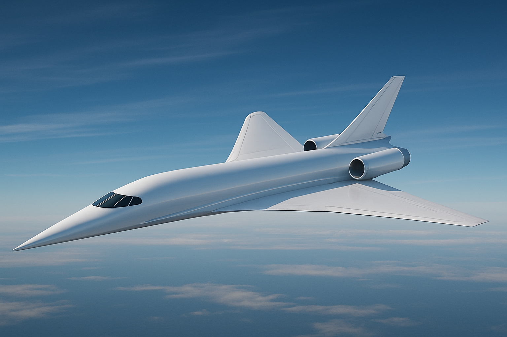

Aircraft design
Mission definition, requirements, configuration selection and preliminary sizing.



DIVISION 01 / ATMOSPHERIC FLIGHT
ALTAIR AERONAUTICS — AIRFRAME / AERO / FLIGHT
From early aircraft configuration to aerodynamic analysis, Altair Aeronautics is where flight ideas meet engineering trade-offs, constraints and evidence.
Aeronautics projects ↗01 / FLIGHT DISCIPLINES
Project directions span conceptual design, aerodynamics, uncrewed aircraft systems and software that makes engineering workflows clearer. Work status is described project by project.
Mission definition, requirements, configuration selection and preliminary sizing.
Aerofoil and wing studies, performance estimates and model validation.
Stability, control, performance and the trade-offs connecting them.
Transparent software for repeatable preliminary design and analysis.
02 / PROJECT REGISTER
Browse current concepts, objectives, next steps and released project files. Documents and CAD/model downloads appear only when they have actually been added to the repository.
Open Aeronautics projects ↗One group. Two aerospace frontiers.
Continue to Altair Astronautics ↗